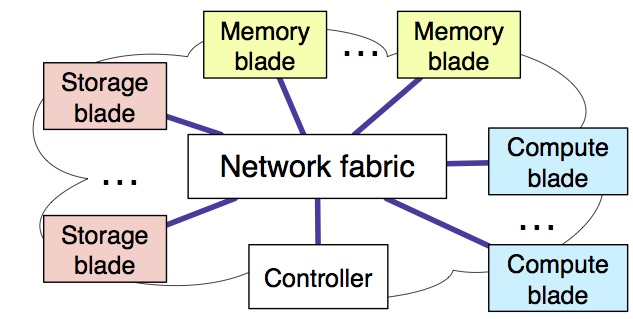
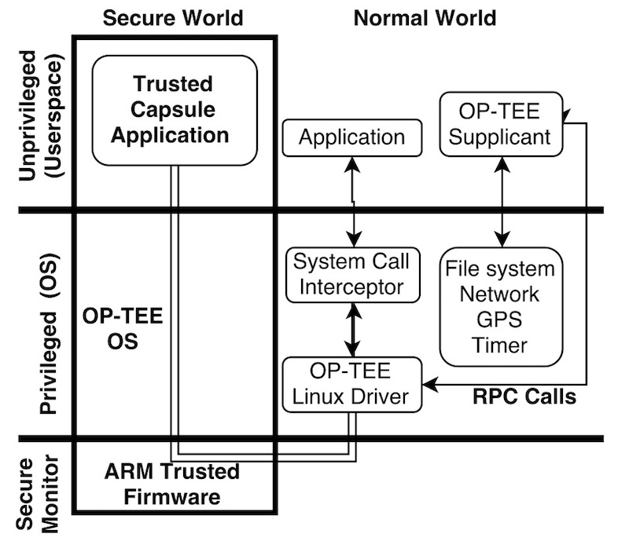
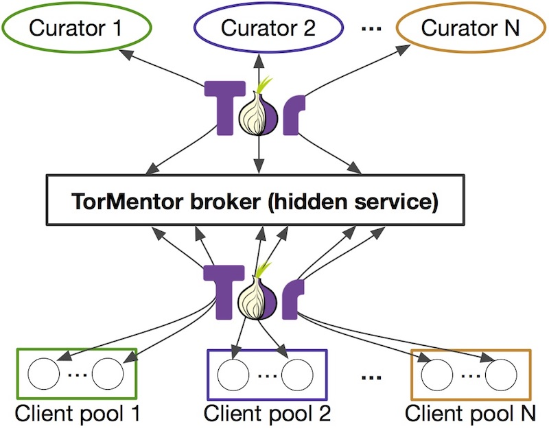

|

|
Networked and distributed systems
We investigate new design principles in datacenter system design and operation.
- Decibel: a system for storage sharing in disaggregation (NSDI 2017)
- Disaggregated datacenters: fate sharing considerations and programmable fault tolerance (HotNets 2017)
- NetSolver: virtual data center and NFV chain allocation (IJCAI 2017)
- New data structures and algortihms to characterize storage workloads (OSDI 2014)
|
|

|
Security
We develop systems to protect users' data and activities using a variety of approaches.
- Shuffler: Fast and Deployable Continuous Code Re-Randomization. (OSDI 2016)
- Theory and techniques for quantifying information flow (EuroS&P 2016)
- Micasa: Preserving user data functionality after service end-of-life in hosted applications (SoCC 2013)
|
|

|
Privacy
We use modern privacy-preserving methods to provide new guarantees to current system design paradigms.
|

|
Software engineering for systems
We research processes, techniques, and tools to help engineer complex systems.
|